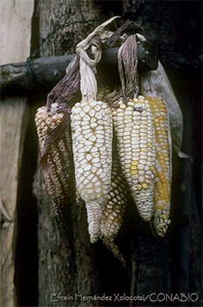

Referencias
- Garrison, W. H. 1991. Efraim Hernandez Xolocotzi-Guzmán(1913-1991). Economic Botany 45(2): 301-302.
- Kato, T.A., C. Mapes, L.M. Mera, J.A. Serratos, R.A. Bye. 2009. Origen y diversificación del maíz: una revisión analítica. Universidad Nacional Autónoma de México, Comisión Nacional para el Conocimiento y Uso de la Biodiversidad. 116 pp. México, D.F.
- Ortega, P.R. El maestro Xolo: el maíz y sus investigadores. Periódico La Jornada, Suplemento La Jornada del Campo, 12 de diciembre de 2009.
- Salcedo, M.S. 2006. Efraim Hernández Xolocotzi: pionero de los estudios etnobotánicos en México. Planta, año II, núm. 3. 3-4 p.
Efraim Hernández Xolocotzi
1913 - 1991
Efraim Hernández Xolocotzi Guzmán fue un estudioso de los sistemas agrícolas de México. Se enfocó sobre todo en el estudio del maíz, y fue un destacado promotor del resurgimiento de la investigación etnobotánica en este país. Nació en Tlaxcala en 1913 y falleció en 1991.
Desde pequeño se mudó con su familia a Estados Unidos donde cursó los estudios de educación básica. Su formación profesional la realizó en el Colegio Estatal de Agricultura N.Y., posteriormente en la Escuela de Agricultura de la Universidad de Cornell N.Y. y la maestría en artes con especialidad en Biología en la Universidad de Harvard.
A su regreso a México trabajó en el Banco Nacional de Crédito Ejidal en el estado de Tabasco. A partir de ese momento se interesó por los problemas que había en el agro mexicano, a través de sus recorridos a distintos lugares del país y el trato con los campesinos.
A principios de la década de los cuarenta, fue Asesor Técnico para la Administración Económica Extranjera de la Embajada Americana, donde trabajó para aumentar la producción de semillas oleaginosas de México. Por estos años se dedicó además a recolectar las razas de maíz existentes en México. Gran parte de este material fue destinado a la fundación Rockefeller, que fue la principal responsable de formar las colecciones del Centro Internacional de Mejoramiento de Maíz y Trigo (CIMMYT).
Durante más de cuarenta años dedicó su vida a la enseñanza agrícola y etnobotánica, así como a las investigaciones sobre plantas útiles de América Latina y México. Trabajó en el Centro de Botánica del Colegio de Posgraduados, la Escuela Nacional de Agricultura en Chapingo y la Universidad Autónoma de Chapingo (UACH).
Escribió alrededor de 200 artículos científicos y seis libros. Su obra escrita más relevante ha sido compilada en la colección Xolocotzia editada por la UACH.
Para saber más…
El centro de origen y diversificación del maíz, Zea mays, se localiza entre el centro y sur de México hasta América Central. El aprovechamiento y transformación de esta planta a lo largo del tiempo por parte de las distintas culturas en estas zonas, proceso conocido como domesticación, comenzó hace aproximadamente 8, 000 años. Actualmente existen en México alrededor de 60 tipos distintos de maíz, o razas, cada una diferente en color, forma, tamaño, sabor, tipo de grano, etc.
Video producido por el Museo Nacional de Culturas Populares
Aportación

Fuente: Vida y obra de Efraín Hernández Xolocotzi Guzmán, a 100 años de su nacimiento.
Universidad Autónoma de Chapingo

Efraín Hernández X. Acervo fotográfico. Banco de imágenes CONABIO